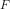

pyBL.ibl_method.IBLMethod¶
- class IBLMethod(nu: float, U_e=None, dU_edx=None, d2U_edx2=None, ic=None)[source]¶
Bases:
ABCBase class for integral boundary layer classes.
This encapsulates the common features and needed parameters for all IBL methods. At the very least it provides the inteface that is expected for all IBL classes.
Integration
The intengral boundary layer method is based on solving one or more ordinary differential equations in the streamwise direction. These ODEs are solved explicitly with the solve_ivp class from SciPy. This class stores the resulting solution as interpolating polynomials of the same degree as the solver (known as a dense output). This allows the querying of the solution at any point between the start of the boundary layer and the end of the boundary layer to return a uniformly accurate result.
Edge Velocity
In order to solve these differential equations, the edge velocity variation is needed. There are a number of different ways to specify the edge velocity (U_e), the first derivative of the edge velocity (dU_edx), and the sedond derivative of the edge velocity (d2U_edx2):
U_e can be a 2-tuple of xpoints and velocity values.
In this case a monotonic cubic spline will be created and the derivative functions will be taken from the cubic spline.
U_e can be a scalar and dU_edx is a 2-tuple of xpoints and rates of change of velocity values.
In this case a monotonic cubic spline will be created for dU_edx. U_e will be found from the antiderivative and the scalar passed in as U_e will be used as the initial velocity. The other derivative(s) will be taken from the cubic spline.
U_e and the derivatives can be callable objects.
If the first derivative object is provided but not the second derivative object, then if the first derivative object has a method called derivative then that method will be used to generate the second derivative object. Otherwise the second derivative will be approximated by finite differences of the first derivative.
If neither derivative objects are provided, then if U_e has a method called derivative (like the classes from the interpolate module of SciPy) then that method will be used to generate both derivative objects. Otherwise the derivative objects will be created from finite difference approximations.
Initial Conditions
The initial conditions needed to start the integration may depend on the specific method being implemented. By default the flow is assumed to start at a laminar stagnation point. If other initial conditions are needed, then an
InitialConditionbased class can be provided.- Raises:
- ValueError
When configuration parameter is invalid (see message).
Methods
D(x, rho)Calculate the dissipation integral.
H_d(x)Calculate the displacement shape factor.
H_k(x)Calculate the kinetic energy shape factor.
U_e(x)Return the inviscid edge velocity at specified location(s).
V_e(x)Calculate the transpiration velocity.
d2U_edx2(x)Streamwise second derivative of inviscid edge velocity at location(s).
dU_edx(x)Streamwise derivative of inviscid edge velocity at location(s).
delta_d(x)Calculate the displacement thickness.
delta_k(x)Calculate the kinetic energy thickness.
delta_m(x)Calculate the momentum thickness.
nu()Return kinematic viscosity used for the solution.
Set the initial conditions for solver.
set_velocity(U_e[, dU_edx, d2U_edx2])Set the edge velocity relations.
solve(x0, x_end[, term_event])Solve the ODE associated with Thwaites' method.
tau_w(x, rho)Calculate the wall shear stress.
- abstract D(x, rho)[source]¶
Calculate the dissipation integral.
- Parameters:
- x: array-like
Streamwise loations to calculate this property.
- rho: float
Freestream density.
- Returns:
- array-like same shape as x
Desired dissipation integral at the specified locations.
- abstract H_d(x)[source]¶
Calculate the displacement shape factor.
- Parameters:
- x: array-like
Streamwise loations to calculate this property.
- Returns:
- array-like same shape as x
Desired displacement shape factor at the specified locations.
- abstract H_k(x)[source]¶
Calculate the kinetic energy shape factor.
- Parameters:
- x: array-like
Streamwise loations to calculate this property.
- Returns:
- array-like same shape as x
Desired kinetic energy shape factor at the specified locations.
- U_e(x)[source]¶
Return the inviscid edge velocity at specified location(s).
- Parameters:
- x: array-like
Streamwise loations to calculate this property.
- Returns:
- array-like same shape as x
Inviscid edge velocity.
- Raises:
- TypeError
When velocity parameters have not been set.
- abstract V_e(x)[source]¶
Calculate the transpiration velocity.
- Parameters:
- x: array-like
Streamwise loations to calculate this property.
- Returns:
- array-like same shape as x
Desired transpiration velocity at the specified locations.
- d2U_edx2(x)[source]¶
Streamwise second derivative of inviscid edge velocity at location(s).
- Parameters:
- x: array-like
Streamwise loations to calculate this property.
- Returns:
- array-like same shape as x
Second derivative of inviscid edge velocity.
- Raises:
- TypeError
When velocity parameters have not been set.
- dU_edx(x)[source]¶
Streamwise derivative of inviscid edge velocity at location(s).
- Parameters:
- x: array-like
Streamwise loations to calculate this property.
- Returns:
- array-like same shape as x
Derivative of inviscid edge velocity.
- Raises:
- TypeError
When velocity parameters have not been set.
- abstract delta_d(x)[source]¶
Calculate the displacement thickness.
- Parameters:
- x: array-like
Streamwise loations to calculate this property.
- Returns:
- array-like same shape as x
Desired displacement thickness at the specified locations.
- abstract delta_k(x)[source]¶
Calculate the kinetic energy thickness.
- Parameters:
- x: array-like
Streamwise loations to calculate this property.
- Returns:
- array-like same shape as x
Desired kinetic energy thickness at the specified locations.
- abstract delta_m(x)[source]¶
Calculate the momentum thickness.
- Parameters:
- x: array-like
Streamwise loations to calculate this property.
- Returns:
- array-like same shape as x
Desired momentum thickness at the specified locations.
- set_initial_condition(ic: InitialCondition) None[source]¶
Set the initial conditions for solver.
- Parameters:
- icInitialCondition
Desired initial condition.
- set_velocity(U_e, dU_edx=None, d2U_edx2=None)[source]¶
Set the edge velocity relations.
There are a number of different ways to set the velocity relation and its derivatives. See class definition for details.
- Parameters:
- U_e2-tuple of array-like, scalar, or function-like
Representation of the edge velocity to be used in analysis
- dU_edxNone, 2-tuple of array-like, or function-like, optional
Representation of the first derivative of the edge velocity to be used in analysis. The default is None.
- d2U_edx2None or function-like, optional
Representationa of the second derivative of the edge velocity to be used in analysis. The default is None.
- Raises:
- ValueError
When configuration parameter is invalid (see message).
- solve(x0: float, x_end: float, term_event=None) IBLResult[source]¶
Solve the ODE associated with Thwaites’ method.
This actually solves the following differential equation

where  is either the linear approximation or the actual term from Thwaites’ original paper.
- Parameters:
- x0: float
Location to start integration.
- x_end: float
Location to end integration.
- term_eventList based on
IBLTermEvent, optional User events that can terminate the integration process before the end location of the integration is reached. The default is None.
- Returns:
IBLResultInformation associated with the integration process.
- Raises:
- TypeError
When solution parameters have not been set.